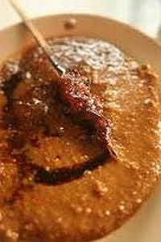

Sambal Sate (Sambal Kacang)

Bahan:
- 50 gram kacang tanah goreng
- 3 buah cabe rawit atau sesuai dengan selera
- 1 cabe merah
- gula jawa secukupnya
- 75 cc air matang
- 3 sdm kecap manis
- 4 butir bawang merah, diiris ipis-tipis
Cara Membuat:
- Gerus kacang tanah goreng, cabe rawit dan cabe merah sampai
halus.
- Bubuhkan sedikit gula jawa.
- Cairkan sambel dengan air matang lalu tuang kecap manis.
- Aduk sambel sampai rata.
- Siap untuk dihidangkan dengan Sate Ayam atau Sate Kambing.